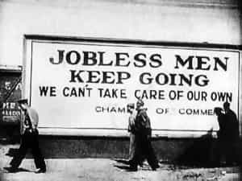

Nietzschean who encountered Celine, Houellebecq and black metal. Blogs at Amerika and Death Metal Underground. Former writer for ANUS and CORRUPT.


Journalist Glenn Greenwald partially broke ranks with his media cohorts to express the dirty truth about why it is hard to survive now, especially as a young man:
Just curious: is there anyone who still doubts that the U.S. is well into late-stage imperial collapse?
— Glenn Greenwald (@ggreenwald) March 4, 2016
The grim fact is that not only is the USA in “late empire” stages of collapse, but all of Western civilization is heading down the toilet. This means not just the USA, but Western Europe, Canada, Australia, and New Zealand will feel these effects in parallel. If you live in one of these societies, you are in for a rough ride.
But fear not. This collapse has been going on for several millennia. What we think of as “society” today is a pale and degraded imitation of what went before. Now we have technology, but how long will that last without people to keep the power grids, internet, water supply and food system going? The vaccines and iPhones will disappear quickly.
The ancient Greek philosopher Plato pointed out how long the collapse has been ongoing by referring to events centuries or millennia before he wrote, 2400 years ago:
When discord arose, then the two races were drawn different ways: the iron and brass fell to acquiring money, and land, and houses, and gold, and silver; but the gold and silver races, not wanting money, but having the true riches in their own nature, inclined toward virtue and the ancient order of things. There was a battle between them, and at last they agreed to distribute their land and houses among individual owners; and they enslaved their friends and maintainers, whom they had formerly protected in the condition of freemen, and made of them subjects and servants; and they themselves were engaged in war and in keeping a watch against them.
This psychology—a view of the world based in the distribution of wealth by convenience, not to those who merit it—is the cause of our decline. It has taken it many centuries to reach its present state, where crass commerce and popularity with the herd rule over all aspects of life.
Every era has its golden age; that is because for most of a civilization’s life cycle, its best days are behind it. It reaches a peak early on and coasts, like a successful business, for most of its lifespan. At the end, it pays the cost for having coasted—ignoring the need to rigorously maintain itself—when it declines.
In other words, a civilization enters the process of downfall by succeeding. At that point, it enables those who are essentially fools to grow numerous, and then they take over. When you notice that idiots rule your society, and morons are most of what you see, your society is in the “late empire” stage. Here are some ground rules for surviving the collapse of a civilization:
The news and entertainment media makes its money by entertaining you. For that reason, the first rule of media is that any result must be entertaining. Truth takes a back seat. Hollywood and the mainstream media love stories of peak oil, asteroids hitting earth, climate change and the Zika virus wiping us out.
The reality is more prosaic. Every society exists somewhere on a scale of health from ideal to “third world.” When a civilization declines, the collapse comes slowly and from within. Institutions become less effective, corruption spreads, and people become insane trying to adapt to it. Soon you have a typical third world society: social chaos, tyrants for leaders, lack of effective hygiene and infrastructure. You might think of it as humanity returning to the state of the ape-like ancestors from which we evolved.
Third world societies are frustrating because you cannot do much in them. First, your options are limited by the lack of infrastructure and people who appreciate quality; second, any healthy and sane activity will be opposed by the others around you, who will see you as competing with them with your fancy new ideas, and they will try to tear you down and destroy you.
At the end, the former first world will resemble “Brazil 2.0”: a few rich people ruling over a mixed-race herd which cannot control its own impulses and so lives in the equivalent of favelas, or disorganized slums.
Civilizations die because man takes over from nature by starting civilization, and then people become accountable to human rules, which are more social than realistic. This process, known as “demotism,” means that whatever is most popular becomes the accepted truth. You can see this manifest in commerce, democracy and social popularity itself.
Neoreactionary writer Mencius Moldbug gives us a workable definition of demotism:
Any system of government in which the regime defines itself as representing or embodying the popular or general will can be described as “demotist.” Demotism includes all systems of government which trace their heritage to the French or American Revolutions – if anything, it errs on the broad side.
Because civilization has become its own determiner of what is true, or what is good or bad, it exerts a Darwinian effect and weeds out those who are realistic about what is actually true. Society has become a popularity contest and only those who flatter the illusions of others will succeed. Some call this “utilitarianism.”
You were born at the tail end of this process. You will hear nothing about it because everyone is in denial. As they say in addiction recovery classes, the first and hardest step is admitting that a problem exists. People will resist doing this with all of their might.
It is convenient to blame our leaders, the media, the rich, the Jews™, etc. for our problems. A more realistic view sees the origin of the problem in the behavior of normal people. They will avoid any notion that their society is in decline, and instead flock toward ideas that tell them this decline is actually just society succeeding.
If you wonder why every definition used in public discussion appears “inverted,” or to mean the opposite of its logical meaning, this is why. People will not directly confront the issue of decline, so they have to re-style every definition as its opposite so what we have appears to be good.
This extends to your social group. Yes, the mainstream media is preaching lies and insanity, but so are your friends. Most of them get their opinions from television, or from “intellectual” sources like The New York Times or Salon, and they parrot that back to you in an attempt to appear smart, cool and together.

Remember that people are rewarded for saying what makes others feel good. Every person wants to feel that he, personally, is doing well. Having a society in decline would contradict that, so he will never admit that his civilization is failing. Instead, he will try to explain that failure as a form of success and will reward others who do the same with his attention.
This means that every public figure is lying to you. They will not admit the obvious, and will invent a distraction or excuse instead. If they did not, they would not be public figures; they would not be popular. Those who are willing to tell the truth never get promoted to these roles.
It also means that every person you meet on the street is lying. Life is a competition for success. They want to appear successful, because part of succeeding is to look the part. As a result, they will not only refuse to admit the decline, but will claim that such ideas are nonsense.
They must keep up the illusion of doing well. This is why decline is so hard to reverse: not just the average person, but all but a handful of people, will bless the decline so that they may get their share of what is left. If you think of robbers fighting over the division of the loot, you get the idea.
When there is a goal to civilization, like in its early stages, people can work together toward results. As the decay goes on, the rule becomes “every man for himself.” This means that every other person out there is trying to use you as a means to their own success.
In social terms, this means that most of your “friends” will be fair-weather friends. They will keep you around as long as you provide some role that flatters their self-image. Usually this consists of them affirming your social status, or importance to the social group, as lower than theirs. That makes them look more important.
Others will use you for what you can do for them. They will see your band perform only if you go see theirs. The problem with this is that soon you are living entirely for other people. You spend all day at work doing stuff for other people, then spend your free time doing the same. At age 65 you will wake up with both job and friends gone and wonder where your life went.
With women, you have to keep in mind that their goal is to subvert you in order to make them look good. When your magic is gone, they will discard you. A woman will adopt you as a lifestyle accessory to make her look successful. She will then demand you conform to her lifestyle. At that point, your ability to be “magical” for her will be gone. Exit you.
With business, this means that all products become parasitic over time. This is necessary to pay for all the parasites who start working at a company once it succeeds. This is why you should have no brand loyalty.

In a society where every person is flaky and irresponsible, workers cannot be counted on to do much more than show up and go through the motions. Employers have responded to this by making each job a simplified role where the worker can be easily replaced. This even extends to the professions at this point, except at the highest levels, and even those elites seem to have dubious judgment.
As a result, most of any job consists of “pro forma” activity, or tasks designed to keep up the appearance of being productive. The actual job is a few hours a week where your input is actually needed. The rest is designed to make your supervisors, and her managers all the way up to the top, look good because all the workers appear engaged in “important” activity.
Remember that being successful entails looking successful. Creating “important” tasks makes people look successful, so they do it to their underlings. This is why you will work all night on projects that never see the light of day, or spend hours each week filling out forms that no one sees. Appearance is more important than reality in dying civilizations.
The only antidote at this point is to own your own business. Many of these businesses are of types looked down upon by the “college-educated” crowd, but owning your own plumbing business, HVAC, farm, gun shop or auto repair means you are not replaceable. This benefits you as things go further south.
Collapse is a state of mind. It replaces realistic thinking with the idea of pleasing others with illusions. As a result, it has no headquarters or center. It infiltrates everything because ordinary people use it as a means of advancing themselves.
Every institution that has people in it will have been affected by this mental corruption. This means that whatever institution — government, private or charitable — that you interact with, you must expect it to be parasitic and lying to you. When these institutions tell you something is truth, look for what they are attempting to conceal.
This should also remove any residual guilt you have about deceiving institutions or depriving them of what they consider their due. Ignore charities and “feel-good” products, including Girl Scout Cookies. Pay as little in taxes as possible by having a business to deduct life expenses and realizing some income through barter.

In order for a collapsing civilization to appear credible, it replaces all truths with lies. This includes making fake versions of everything that you know to be true.
Think of fast food. It is a replacement for the real deal which costs less than twice as much. Instead of a real meat hamburger, you are eating soy mixed with Grade-Z meat on a bun made out of Grade-Z flour with sugar added to mask that fact. Collapse gives every idea, habit and object the fast food treatment.
For an example of how this happens, consider the redefinition of masculinity:
To put it more accurately, we can say that men are pressured to conform to what we might call ‘low masculinity’ (drunkenness, lack of restraint and intelligence, picking on those who — through size or numbers — are largely defenseless, etc.), just as women are pressured to conform to what we might call ‘low femininity’.
In a dying time, every ideal is an imitation of a higher ideal, but it has been “democratized” so that fools, idiots and morons can participate. Real masculinity is difficult, but buying a sports car, drinking watery soda-pop beer, and flattering stupid women in nightclubs is easy. Easy = popular = “successful.”
When you think about “difficult” and “easy,” consider that you are referring to mental state. It is difficult to change yourself through self-discipline and realistic thinking; it is easy to engage in a thoughtless habit.
The fakery extends to women. The definition of woman has been inverted so that we do not notice we are getting the fast food version. This is why most women act like men: their sexual openness and aggressive outlook is designed to conceal the fact that inside, they are a mess. They did not take the difficult path but the easy one.
You know that the official institutions are corrupted, but what might come as a surprise is that the unofficial institutions that claim to be an alternative are broken as well. The same idea of demotism has infected them and made their message into a fast food version of what it could be.
Consider white nationalism. The sane idea would be that in each society, the founding ethnic group should be the only group and should act in its own interests. Instead, white nationalism becomes pointless bashing of people for the mere sin of being non-white, and incorporates a whole lot of liberal ideas to make it popular with people who are accustomed to decline.
The same is true of any “movement.” Environmentalism changed from trying to save the world to defending third world immigration and supporting big businesses, if those businesses adopted Left-tinged ideas.
The original corrupt opposition is the Left. Their idea—that all people are equal—was designed to create a distraction from the real question, which is “How do we stop our civilization from declining?” Their entire political platform is based on a distraction, but it succeeds because it flatters people to consider themselves equal, because that way they can never be wrong.

Take stock of your situation: you are living in a dying civilization where every truth is a lie and every person is an agent of destruction. Your first task is to escape, but not physically. You must escape first in your mind. You achieve this “exit” by becoming sane, and the only way you can do this is by paying attention to reality in place of the lies.
You can recognize reality by paying attention to cause and effect. What was intended, what was done, and what were the results? This approach is the basis of the “scientific method” and you can use it to look at your life, find what works, and by paying attention to that, see where society is doing the opposite.
For example, many men (and man-boys) attempt to gain sexual favors from women by white knighting. Have any of them actually experienced intercourse as a result? And if so, was it a woman you would give the time of day to? Their failure shows you that their method is not realistic, but pathological. It is formed of pleasant human notions that do not work in reality.
You can extrapolate from this. How much of politics is white knighting? How much of office politics is the same? You will see the same patterns repeated time and again in different ways. By recognizing how reality works, instead of the social ideas that most people act on, you can begin to escape the insanity.
Your goal is to weather the storm and prepare to rebuild civilization. What exists now, that seems so solid and unshakeable, in fact adopts that appearance because it is weak and already falling. Help it along if you can. But most of all, gain sanity so that you do not carry it within you like an infectious disease.
Form networks with other realists. Exchange information about real life stuff, even if it is just as prosaic as gardening and car repair. As civilization loosens its grip, these informal networks will form the basis for what comes next.
In a dying civilization, most of the people will give up their souls because to have a soul is to care about the consequences of one’s actions, and that requires noticing reality. In turn, noticing reality requires becoming aware of the collapse and then feeling less successful as a result. People will do anything but face the abyss of terror, doubt and ambiguity which that opens.
Friedrich “Fred” Nietzsche wrote of a type of person he called The Last Man:
Alas! there comes the time when man will no longer launch the arrow of his longing beyond man — and the string of his bow will have unlearned to whiz!
Last men are people who care about nothing but their power over others through social means. They see no world beyond personal “success” in the dying civilization, and have no values. They cannot form true friendships, will never fully love another person, and are parasites that will sap your time, energy and direction.
The average person created by the transition to third world status of a dying civilization is: of mixed heritage, without religion or philosophy, very social and super-dedicated to his job, and has no higher joys in life than eating, shallow socializing, drinking, shopping and “entertainment.” This is the human ruin in which you exist.
Your enemy in this time is fatalism, or the belief that nothing you do can have any positive results. Fatalism is the counterpart in the individual to decline in a civilization; it means giving up on reality and having standards higher than “it’s all good man.” Last men specialize in disguising fatalism as virtue.
To work around last men, treat them as salesmen. Everything they tell you will be said only to make you purchase a product, which is usually them. They want you to support them socially and in their careers. Unless there is reward in it for you, it is best to politely listen to the sales pitch and claim you will think about it and act at an indeterminate later time.
Civilization decline has happened many times in the past. In fact, all of the third world today consists of remnants of once-great civilizations. This means both that civilization collapse is usually inevitable, and that it is escapable. People have done it in the past. Rome was founded by Greeks fleeing their dying society for a new hope. Europe may have been the creation of horsemen from the East who fled a dying civilization there.
Since Earth is fully colonized, and there are no more empty places to escape to, the new society will rise up in place. A group of people who are the most forward-thinking among their kind will, like during the American Revolution, overthrow their government and depose all who supported it.
Unlike Brazil, places like Europe and the USA have clear groups of founders and strong values inherited from those. These values will guide the new society arising from the ashes of the old. But nothing will happen until power is seized and the morons are beaten back.
This does not mean seizing power in the present system, although that will be a useful method toward unifying the group. It means a rejection of everything this society stands for, most notably equality (which benefits morons—everyone else is already equal or better by ability) and the subsidy state, which sponsors morons.
Whether or not this happens in your lifetime, the only way to discover your masculinity is to work toward goals that even if far off are inherently good. Replacing Idiocracy with a functional civilization is a start, and by working toward it, you can regain the self-esteem stolen from you by this broken era.
 If you like this article and are concerned about the future of the Western world, check out Roosh's book Free Speech Isn't Free. It gives an inside look to how the globalist establishment is attempting to marginalize masculine men with a leftist agenda that promotes censorship, feminism, and sterility. It also shares key knowledge and tools that you can use to defend yourself against social justice attacks. Click here to learn more about the book. Your support will help maintain our operation.
If you like this article and are concerned about the future of the Western world, check out Roosh's book Free Speech Isn't Free. It gives an inside look to how the globalist establishment is attempting to marginalize masculine men with a leftist agenda that promotes censorship, feminism, and sterility. It also shares key knowledge and tools that you can use to defend yourself against social justice attacks. Click here to learn more about the book. Your support will help maintain our operation.
Read More: Patriarchal Nationalism: The Only Societal System That Can Save The West